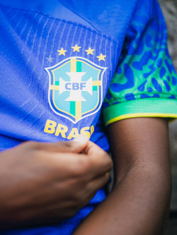

O Brasil, único pentacampeão do mundo, chega à Copa de 2026 carregando o peso das cinco estrelas — e também das expectativas. Mas o que se vê em campo ainda deixa muito a desejar, e o nome que domina o debate é o de Endrick.
Segundo apuração do UOL Esporte, a falta de disciplina tática é o principal motivo da cautela de Carlo Ancelotti com o atacante. Entre as opções ofensivas da seleção, Endrick é considerado o último da fila — atrás de Igor Thiago e Matheus Cunha.
O treinador exige que o centroavante exerça pressão coordenada sobre a saída de bola adversária e mantenha posicionamentos específicos nas fases defensivas e ofensivas da equipe. O problema? Endrick tem a característica natural de recuar para buscar o jogo — e isso quebra o esquema tático que Ancelotti quer impor.
Goal.com BrasilO empate por 1 a 1 com o Marrocos, pela primeira rodada do Grupo C, aumentou os questionamentos após o Brasil apresentar dificuldades para criar jogadas de ataque. Endrick ficou no banco a partida toda. A torcida não entendeu. E com razão.
Diário do centro do mundo
O talento do garoto é inegável. O atacante participou de partidas decisivas nos amistosos contra Croácia, Panamá e Egito, reforçando a confiança da comissão técnica no seu potencial. Quando entra, é para decidir. Mas Ancelotti insiste na teoria — e os titulares não estão entregando.
Portal do GremistaCriatividade não deve ser confundida com desobediência tática. Conciliar disciplina e inventividade não é uma tarefa impossível. Então a pergunta fica no ar: será que o Brasil precisa de mais controle ou de mais ousadia? Talvez a imprevisibilidade de Endrick seja exatamente o que falta num time que joga bonito no papel, mas não consegue balançar a rede quando importa.
BBC News Brasil
O maior de todos os tempos não pode depender só de teoria. Às vezes, a salvação vem do improviso.